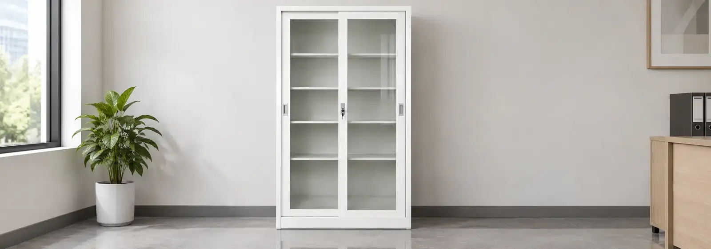
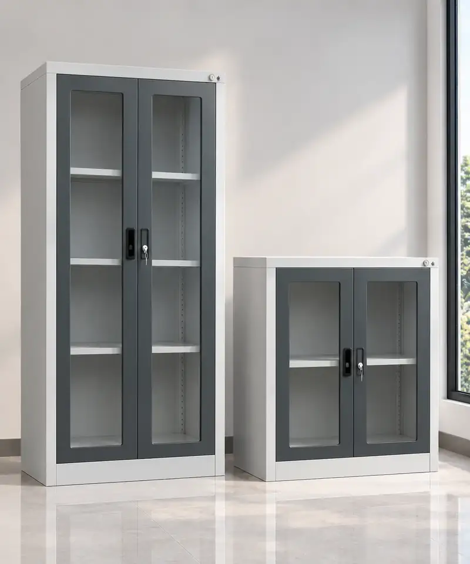
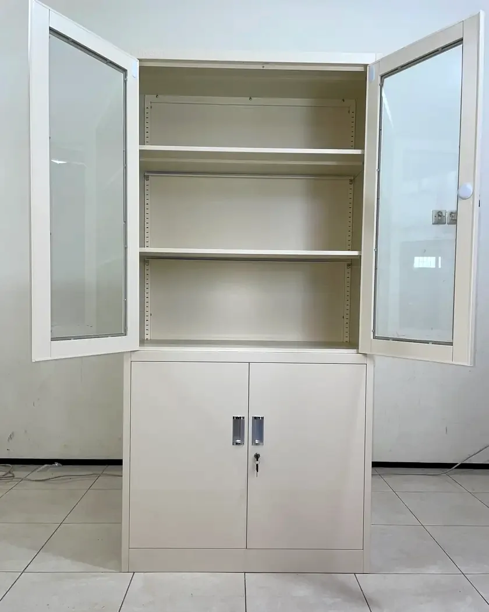
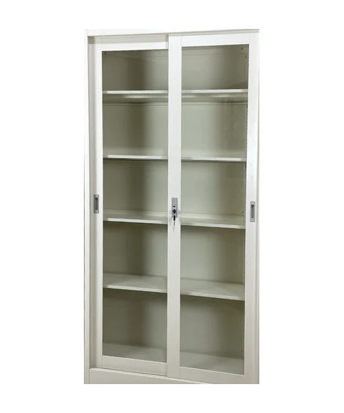
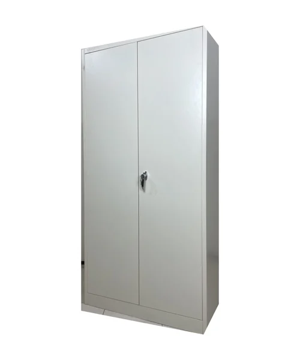
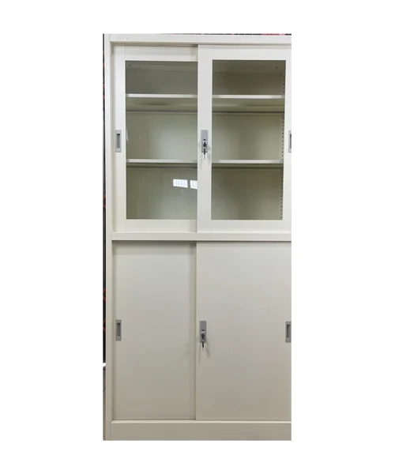

Sekolah dan Kampus
Rapor, arsip siswa, dan dokumen administrasi tersimpan rapi dalam lemari yang bisa dikunci.
.webp)
Cahaya mustika internesia menyediakan lemari arsip untuk di jakarta bahkan diseluruh kota yang ada di indonesia. Rekomendasi merek lemari arsip adalah zeco dan juga vivorti.
Dua merek dengan produk berbeda. Pilih model berdasarkan jenis pintu, kapasitas, dan ruang yang tersedia.

Lemari arsip besi dengan pilihan pintu geser, pintu kaca, dan pintu ayun untuk kantor dan instansi.

Lemari besi pintu sliding kaca, pintu sliding besi, dan pintu ayun dengan rak yang bisa diatur.
Setiap ruang punya kebutuhan penyimpanan yang berbeda. Pilih model berdasarkan jenis dokumen, jumlah berkas, dan luas ruangan yang tersedia.
Rapor, arsip siswa, dan dokumen administrasi tersimpan rapi dalam lemari yang bisa dikunci.
Akta, kontrak, dan berkas klien tersusun per map, sehingga mudah dicari saat dibutuhkan.
Rekam medis dan arsip administrasi pasien tersimpan aman, dengan rak yang bisa diatur tingginya.
Dokumen operasional dan perlengkapan kerja tetap tertata, meski di area kerja yang sibuk.
Setiap lemari Vivorti dan Zeco dirancang agar berkas tersimpan aman dan ruang kerja tetap tertata.

Tinggi rak bisa dipindah, pas untuk map, ordner, dan buku.
Isi lemari tetap terlihat, sehingga berkas lebih mudah dicari.
Dokumen penting tersimpan aman di balik pintu yang terkunci.
Kokoh untuk pemakaian sehari-hari, catnya halus dan rata.
Contoh pada Vivorti SWCB. Fitur dapat berbeda di setiap model.
Lihat semua model →Tips memilih, menata, dan merawat lemari arsip untuk kantor, sekolah, dan instansi.

PerbandinganBandingkan cara menyimpan, kebutuhan ruang, dan kemudahan akses agar pilihan Anda tidak salah.
Baca artikel →
PanduanJumlah pintu, ventilasi, dan kunci yang tepat membuat loker awet dan nyaman dipakai.
Baca artikel →
PanduanEmpat langkah sederhana agar lemari yang dibeli pas dengan ruangan dan tidak cepat penuh.
Baca artikel →Sebutkan kebutuhan dan jumlah unit, kami siapkan penawaran dengan harga distributor.